id="js_content" style="">正文共计3900字左右
预计阅读时间7min
转载请在后台回复“授权”
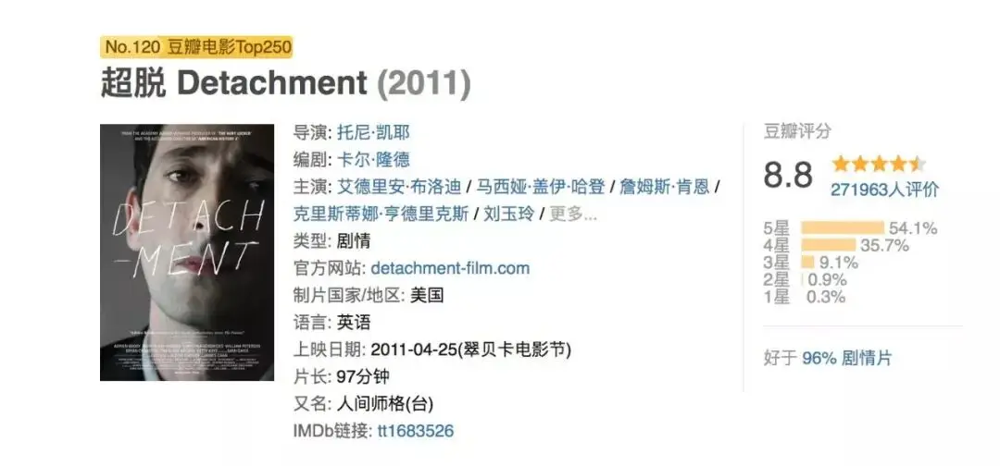
一所学校，被社会视为“垃圾”收容场。
所接受的学生都是最差的，他们百无聊赖、打架斗殴、虐待动物......
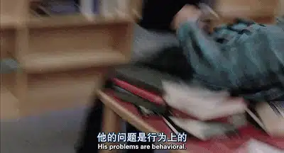
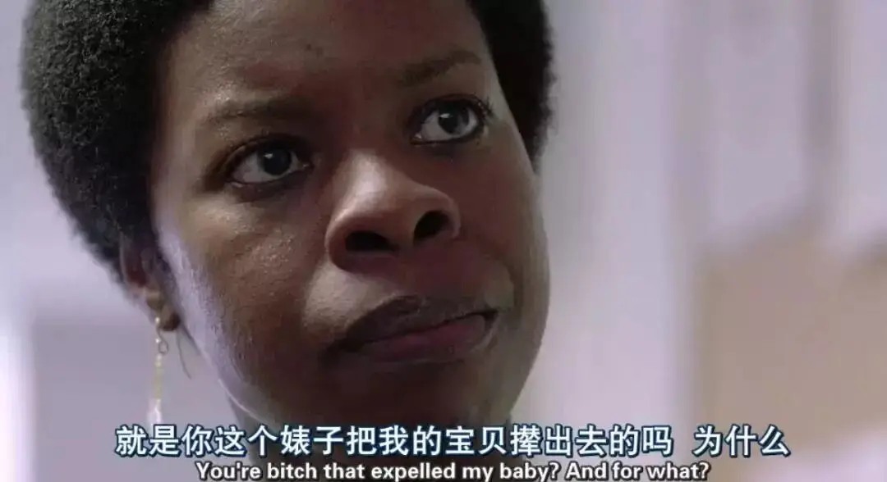
这些学生都有一个共同点，那就是对一切都毫不在乎。
不在乎老师的教导，不在乎肉体的堕落。
不在乎现时的蹉跎，也不在乎明天的模样。
就像是一潭死水，不管是掏心掏肺，还是老师严厉的教训，都激不起一丝涟漪。
所以，很多老师歇斯底里几十年，没有收到学生一句感谢！
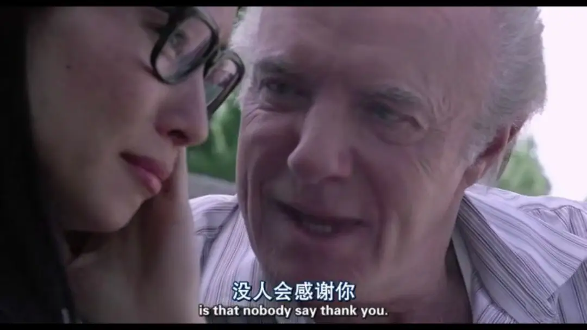
这对于一个教育者来说，几乎是毁灭性的打击。
更加艰难的是，这些老师不仅事业受挫，生活中也是各有各的难题，有人至今孤身一人，有人和丈夫早已经貌合神离。
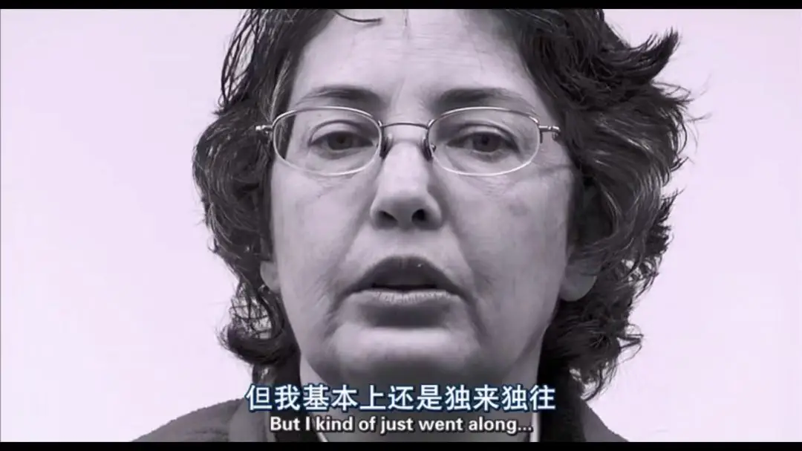
白天带着问题上班，晚上再带着问题回家，他们处在随时要崩溃的边缘。
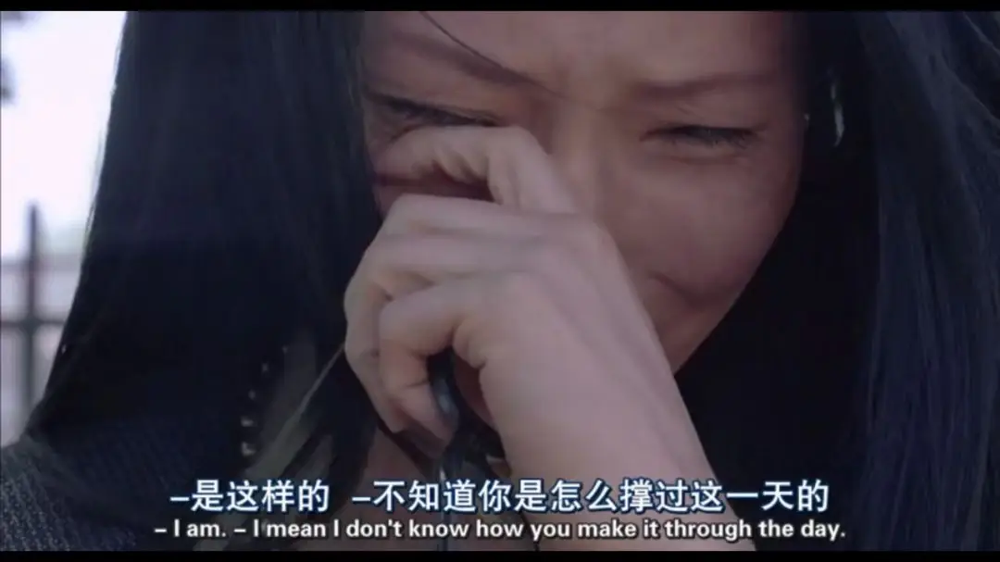
就这样，从学生到老师都笼罩在一种绝望的困境之下。
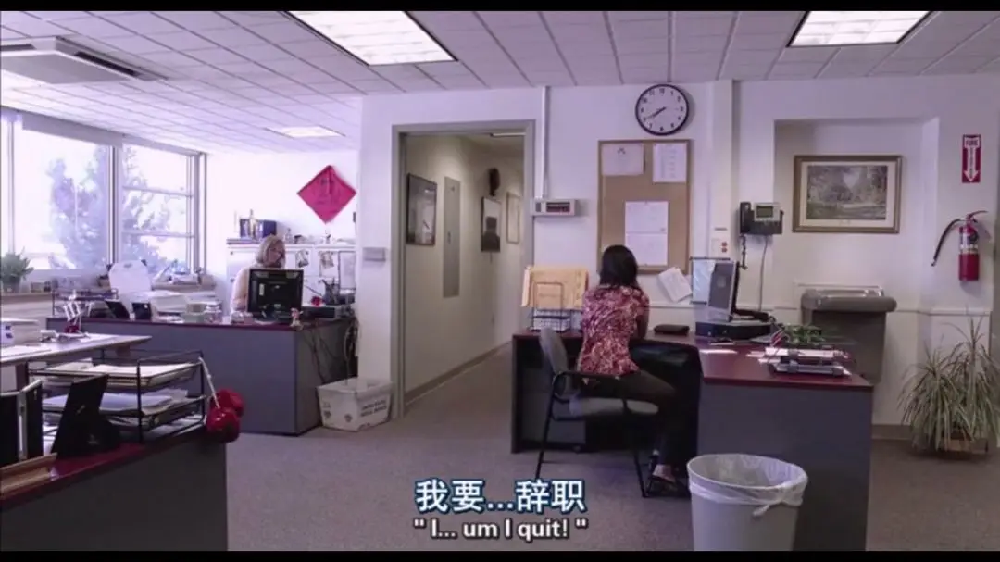
这时，学校迎来一名临时代课老师亨利。
亨利看上去非常淡定，他极富洞察力，学生在他面前就像是一个透明人。
亨利能看到这些学生暴戾乖张面具背后的软弱和无助。
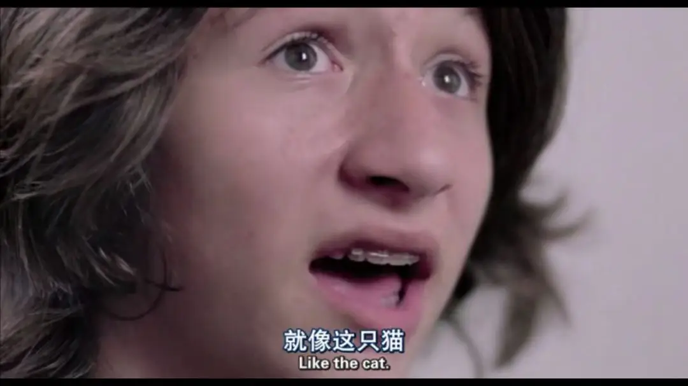
第一堂课上，亨利告诉学生，“我有一条规则，就一条，不想待在这儿的就别来”。
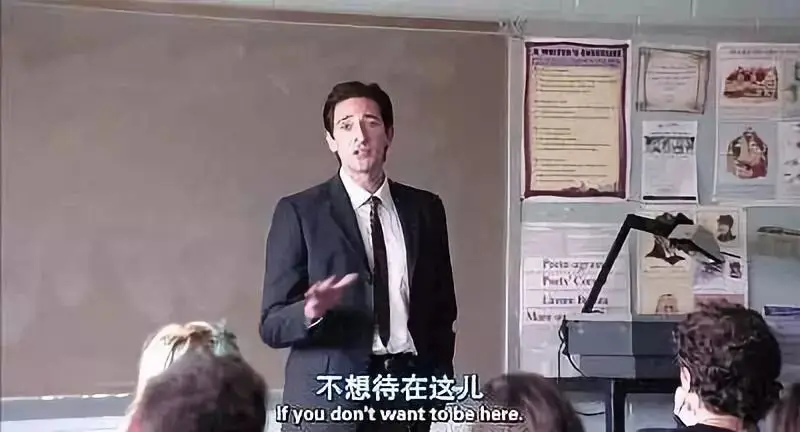
学生们并不买账，教室里嘘声一片。
亨利并没有受影响，他让学生拿出一张纸，“想象一下，如果你死了，你的亲朋好友将如何评价你”。
这时，一个学生非常不耐烦地站了出来，说亨利“废话连篇”，接着便将亨利的公文包狠狠地摔在门上。
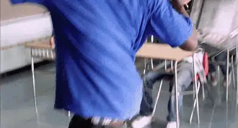
面对这样的羞辱，亨利并未动怒，他告诉学生“那个包，他是空的，他没有任何感觉，我也一样，所以我不会被你伤害！” ......
这是电影《超脱》的开头，这部触及人灵魂深处的作品探讨了一个非常重要的问题：面对生活中各样的困境和伤害，你真的可以不在乎别人的眼光么？
我们经常用“不要在意别人的想法”来安慰别人和自己，这真的是一条光明之路么？
《超脱》用非常细腻生动的方式编制了一张大大的网，陷入困境中的老师和学生表现出两种不同的形态。
一种是被别人的眼光和恶意捆绑，比如说身体肥胖的学生梅雷迪恩被家人、同学耻笑，陷入到巨大的痛苦中。
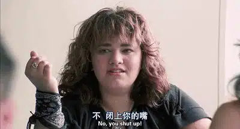
女校长得知自己要被“退位”时，痛苦地蜷缩在地上。
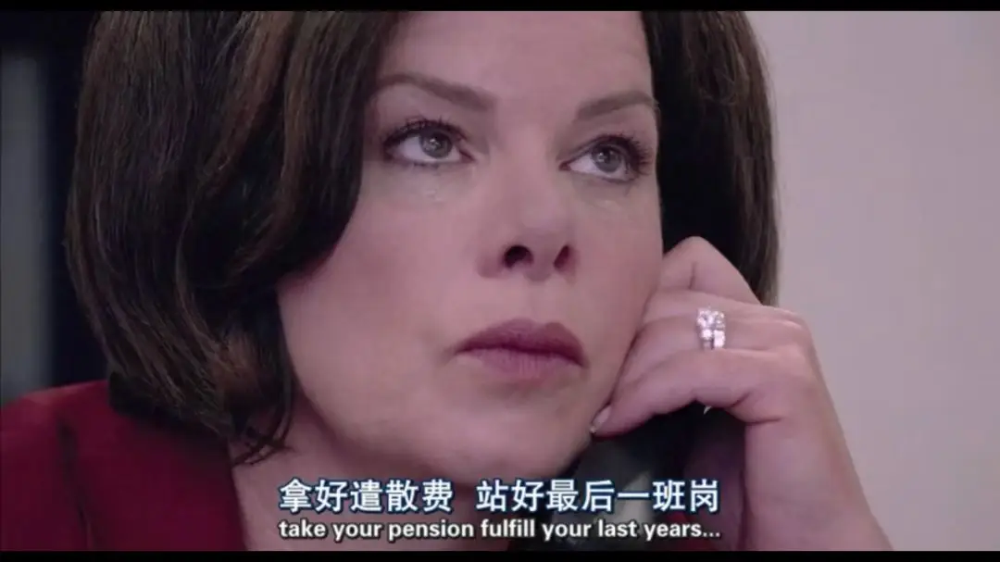
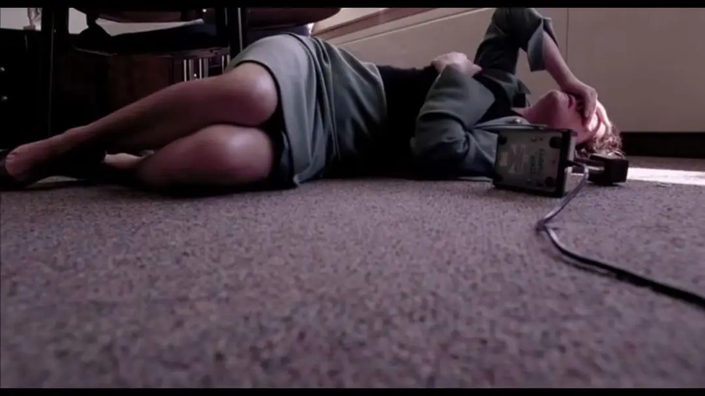
一个男老师在学校被学生嘲笑，回到家中又被家人漠视，所以常常一个人站在操场上，手抓着铁网发呆，这样的生活让他仿佛置身地狱的煎熬中。
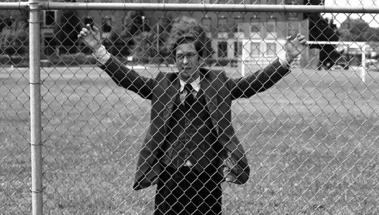
另一种态度便是像亨利一样对一切毫不在乎，他看上去已经超脱于眼前的困境，不论是多么恶意的挖苦都无法伤到他。
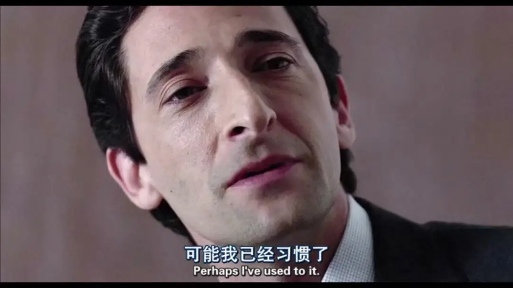
所以，亨利赢得了很多老师和学生的好感，胖学生梅雷迪恩非常羡慕地对亨利说“我要是有你那样坚强就好了”。
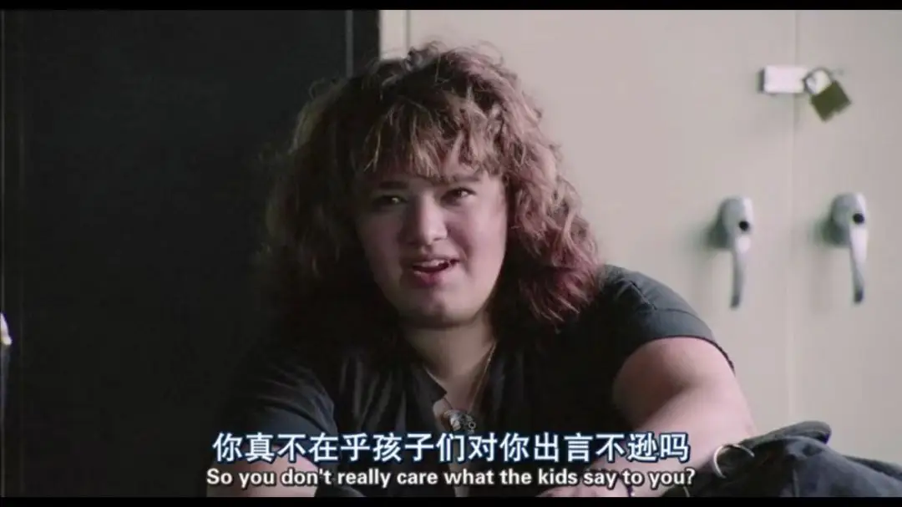
梅雷迪恩的身材曾遭致无数的嘲笑，但是她很有艺术的天赋，擅长用绘画和摄影来表达自己的感受。
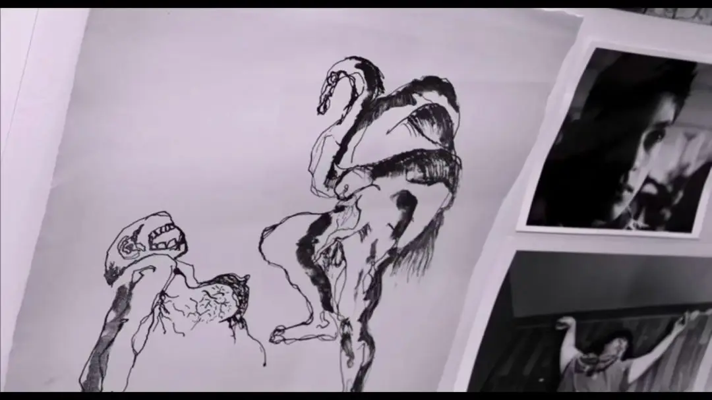
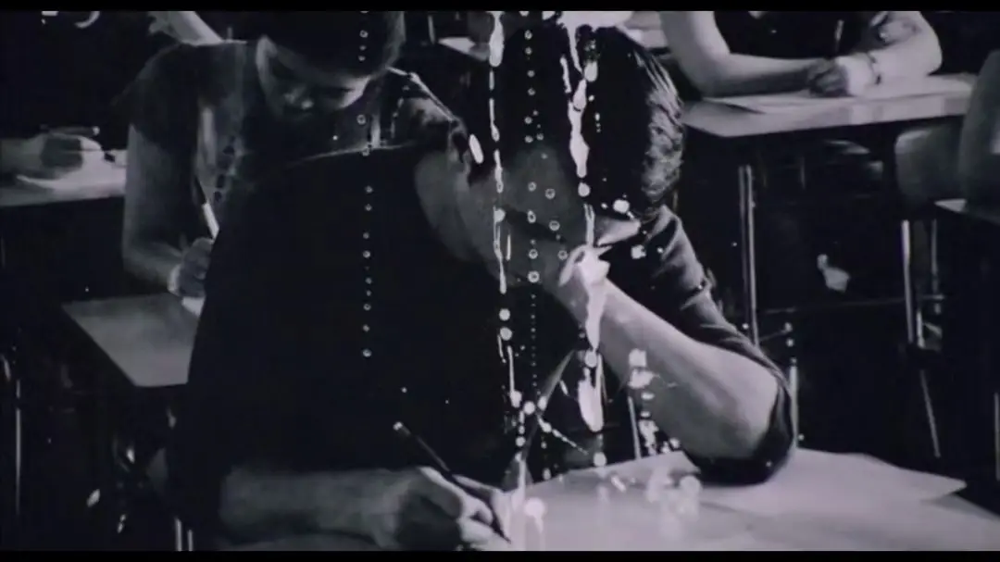
但这些“昏暗”的艺术并没有赢得父亲的赞赏，反而遭到谩骂和羞辱。
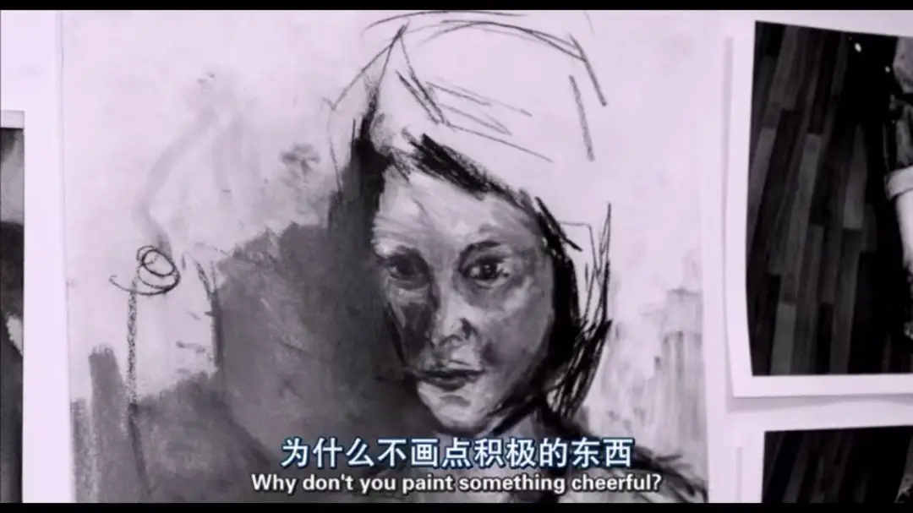
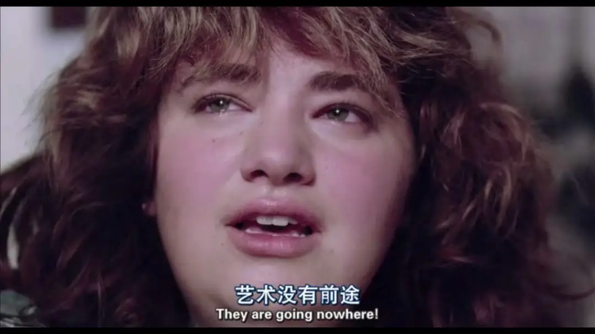
而亨利的出现给了她希望，亨利很明白梅雷迪恩面临的困境，他在课堂上告诉学生，我们被现代生活扭曲，常常会产生双重思想。
双重思想的概念是来自于乔治·奥威尔的反乌托邦小说《一九八四》，即一个人生活在一个不正常的社会里会产生扭曲：
“一个人的脑子里同时具有两种相互矛盾的信念，而且两种都接受”
比如说，当今社会的舆论一边提倡性别平等，一边又会物化女人，会认为女人天生就是下贱的，所以很多年轻人的口中会充满对女人的污言秽语，而女人也会受这些思潮影响而变得不自重。
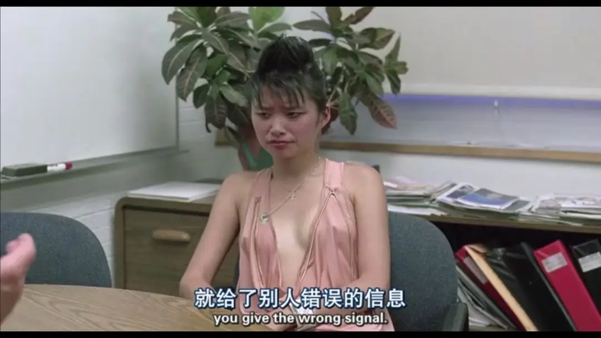
再比如，当今社会一面在告诉我们接受自己本来的样子，一面又在以各种视觉影像告诉大家，女孩子只有变得漂亮才会快乐。
所以很多女生会热衷于减肥、整容，争做时尚先锋。
再比如，每个人都知道身体最重要，但如今的舆论又会告诉你996是一种幸福，拼命工作才会王道，所以很多人一面知道要保护身体，一面又不得不沉默在每天24小时筋疲力尽的灭亡中。
所以，亨利鼓励学生：
为了保护我们的思想不受侵害，能够与侵入我们思想使我们日渐沉默的力量抗衡，我们必须学会阅读，以此来激活自身的想象力，去培养属于我们自己的意识和信仰，我们需要这些技能来保卫和维护自己的思想。
亨利的教导让很多学生空洞的眼睛重新有了光亮。
梅雷迪恩在笔记本上开心地为这位特别的恩师画上了红心。
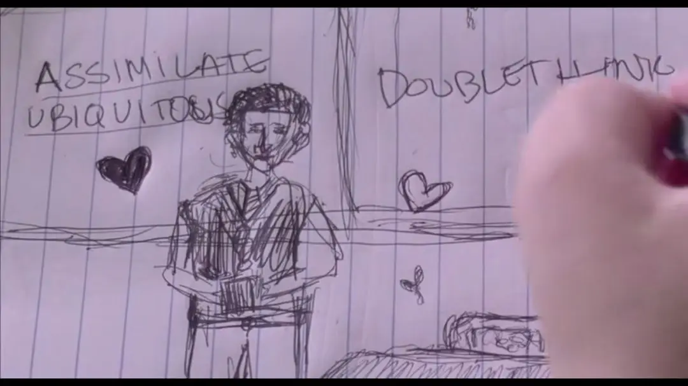
一天，梅雷迪恩一直逗留在教室中，直到亨利注意到了她，亨利看出来，梅雷迪恩渴望着一次畅快淋漓的倾诉。
亨利问她，“你需要帮忙么”。
梅雷迪恩用渴望的眼光看着他。
可亨利却让梅雷迪恩去看心理医生，梅雷迪恩听出了亨利言语中的推诿，毕竟，身处抑郁中的她曾被人无数次以这样“温柔”的方式拒绝。
亨利告诉梅雷迪恩，“我们大家都一样，都会感到痛苦，都会遭遇生活的混乱琐碎，我知道生活本身很复杂，我也没有生活的答案”
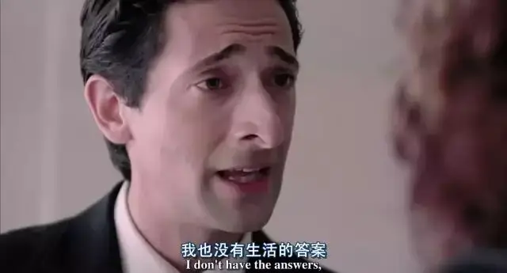
亨利的话让梅雷迪恩失望痛哭，自此，梅雷迪恩再没有像以前那样关注亨利。
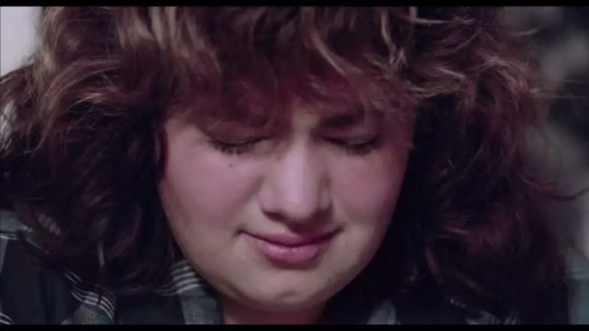
直到学校的一次午餐会上，梅雷迪恩带着自己亲手所做的蛋糕分享给大家。
每一个蛋糕上面都是一个可爱的笑脸，唯一不同的是一个黑色的蛋糕，他的表情却是悲伤的。
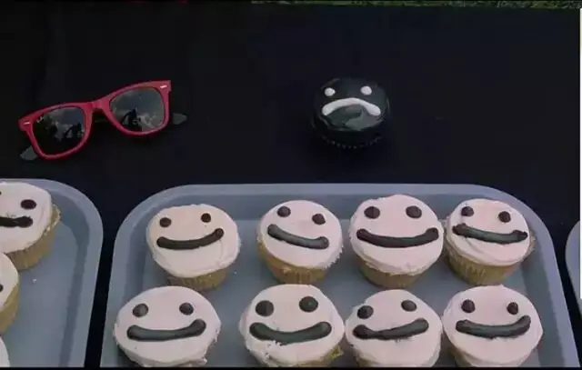
亨利看到后，问梅雷迪恩，那个悲伤的蛋糕可不可以留给他，梅雷迪恩微笑地说，那个蛋糕是留给我自己的，随后便将一个笑脸蛋糕送给老师。
亨利也并未留意便转身离开，接着梅雷迪恩一口一口地将悲伤的蛋糕吃到嘴里，直到倒地身亡。
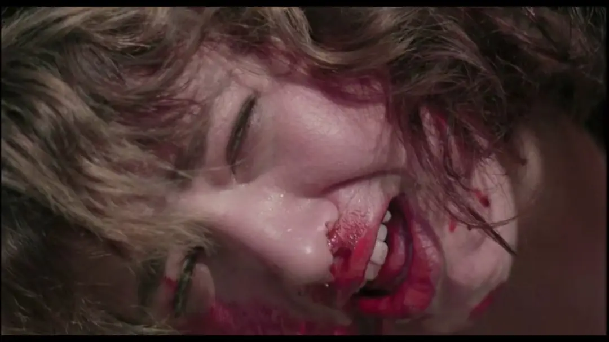
原来，那个悲伤的蛋糕里装满了毒药！
就这样，一个充满艺术天分的花季少女就这样告别了世界。
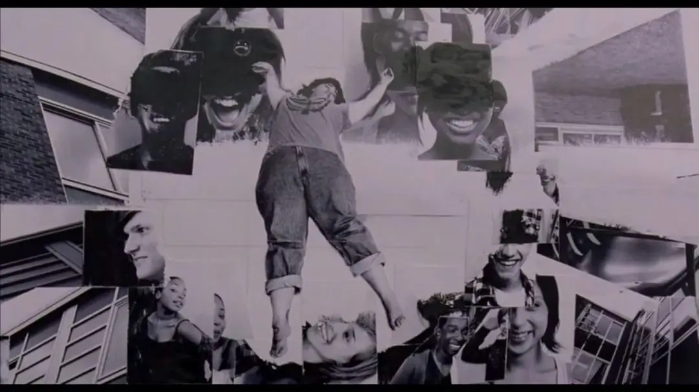
亨利在自白中告诉观众“我让所有人失望了，今天我有所感悟，我微不足道.....你可以看见我，但看到的只是躯壳”。
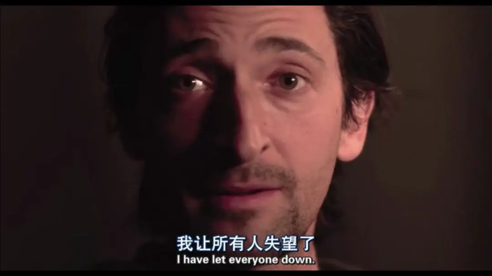
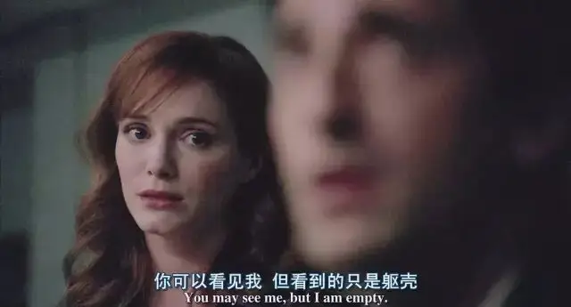
这就是电影里展现的真实，一个对一切都不在乎的人可能是那个最抑郁、最没有能力去爱别人的人。
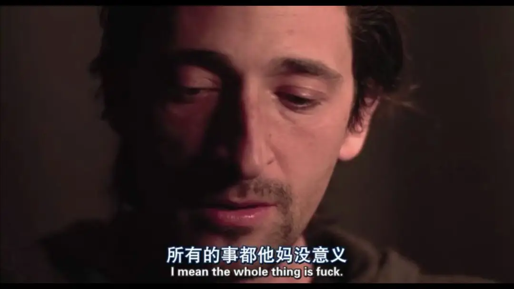
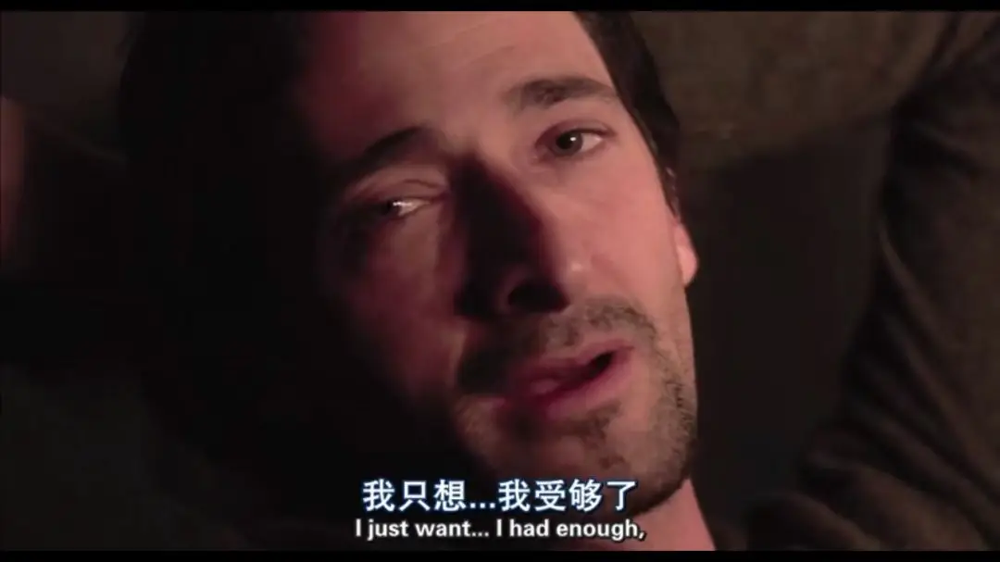
事实上，亨利在第二堂课上便觉察到了梅雷迪恩的自杀倾向。
在梅雷迪恩提交的作业中，她想象在丧礼上父亲会这样评价自己：
她曾是一个温柔可人的姑娘
但她总是对生活要求太多
她又有什么资格不满足？
她的母亲和我尽可能满足她所需
为什么她突然变得如此乖张
如此粗劣 如此刻薄
我们不明白
坦白说，这与我们并没有关系！
我们是称职的父母
但她以自杀的方式回报了我们的付出
自私的傻孩子
她没有机会进入普林斯顿大学了
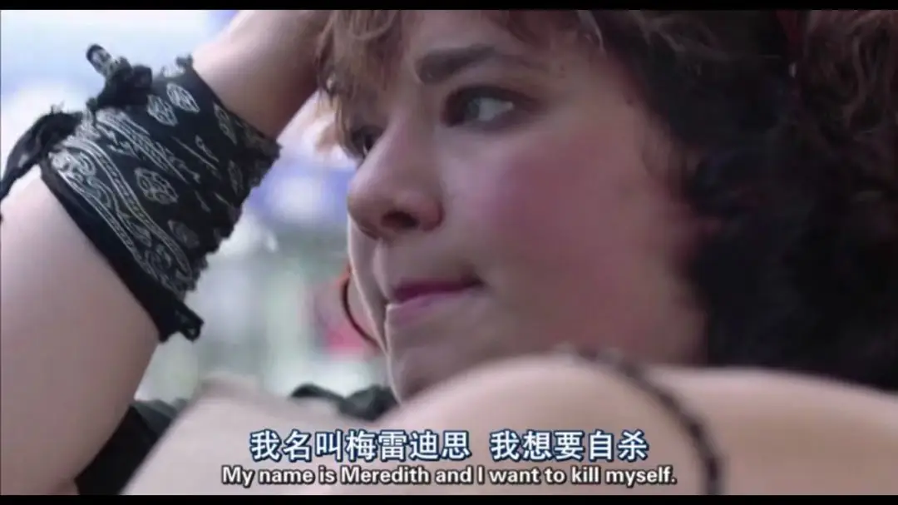
这份作业已经很清楚地表现出梅雷迪恩的抑郁倾向。
亨利在课堂上试图引导过梅雷迪恩，但他失败了，这不是失败于他的洞察力，而是失败于他内心的封闭和干枯。
因为他自己也是一个被深深伤害、急需要被医治的人。
亨利出生在扭曲的家庭，外公和母亲乱伦生下了他，后来母亲精神失常自杀，外公终生活在内疚中。
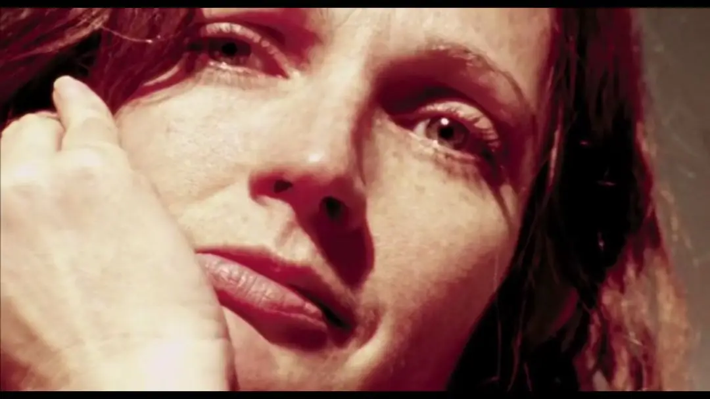
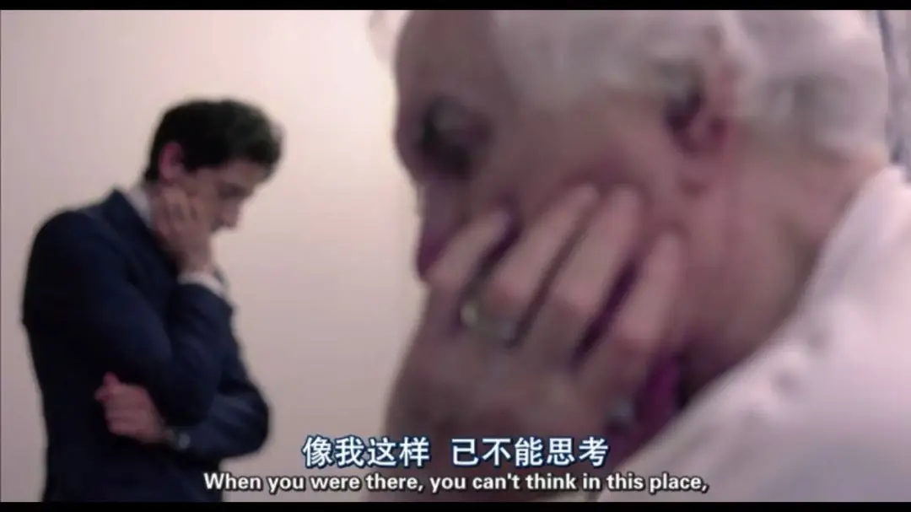
所以，亨利一边在痛苦的煎熬中长大，一边又用表面的平静拼命地按压着心底里的伤口。
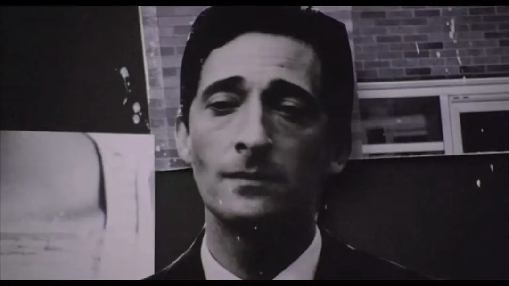
成为老师后，亨利因为痛苦的童年反倒拥有了特殊的情感能力，一个眼神，他便可以嗅到别人背后的东西。
但是，他能察觉别人的痛哭，却没有拥抱别人的能力，他也许能帮助别人抚平生活的创伤，却没有办法找到自我超脱的时刻。
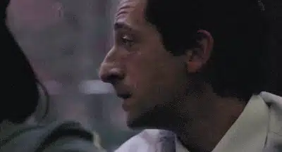
在别人面前，他很坚强也很有智慧，但心底里，他早已经干枯，他在自白中这样说：
我年轻又年老，连灵魂都无聊至极，我虽知道去引导和帮助他人，但我自己其实没有真正长大
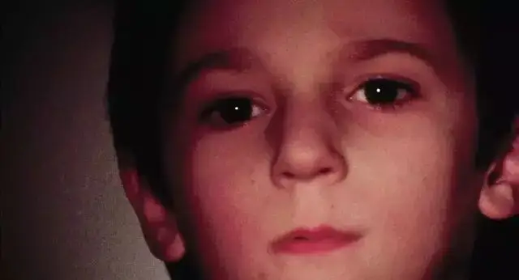
梅雷迪恩曾偷偷观察过亨利，他那双八字眉下潜藏着深不见底的悲伤，亨利的生活毫无激情。
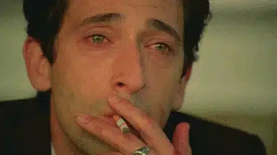
所以，梅雷迪恩送给亨利一张照片，一张空白的面孔，站在空荡荡的教室中，那样落寞和疏离。
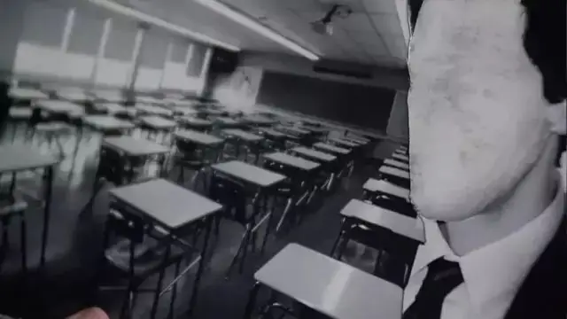
我曾经也觉得，如果要成长就不要太在意别人的想法。
到如今，我才发现这是不可能的，我们没有办法摆脱这个世界的影响。
而这个世界本身就不是完美的，所以我们只不过是从这个坑掉到另一个坑。
我们就像是一个气球，当周围的声音要将我们压扁的时候，我们会很本能地为自己打气，要重新膨胀自己以抵御外界的压力。
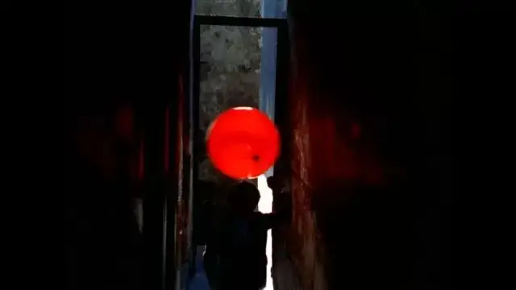
但是当我们无限膨胀自我，不再与任何外界的空气接触时，我们便会爆炸。
抑郁症并不是太容易受别人影响而心情低落，而是因为已经对外界丧失了兴趣和感知的能力，所以一直沉沦在自我的慵懒中不能自拔。
就像冰山一样，浮在水面上的冰山看上去并没有什么，但是冰山底部的马达早已经停止了转动的兴趣。
这样，冰山的崩溃只不过在旦夕之间。
这就是我们面临的困境，在这个充满罪恶的世界，如果我们活在别人的目光下，我们会受伤，会失望。
但如果对一切毫不在乎更没有了行走的动力，只会原地爆炸。
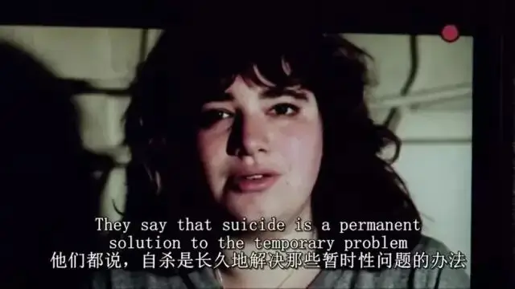
所以，对于今天很多人来说，我们缺的不是不顾一切别人眼光的“勇敢”，而是对这世界仅存的美好的在乎和珍重。
电影中，一个女孩打算高中辍学，面对学生的决定，老师质问女孩，你将来有什么打算。
女孩告诉老师，继续和男朋友混，也许将来做个模特或者加入朋友的乐队。
女孩回答时，眼光一直在躲闪。
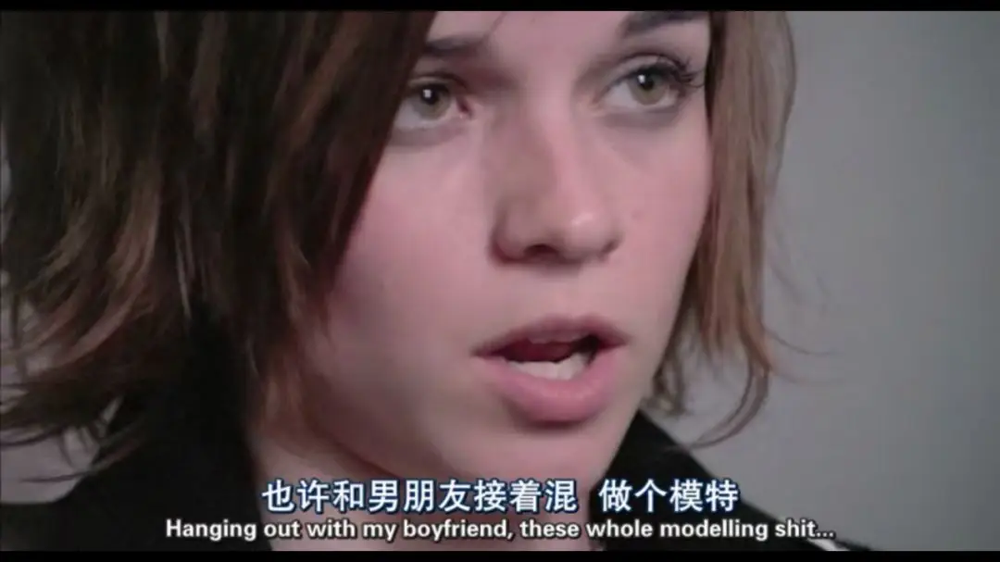
接着老师问女孩，我看了你过去十周的成绩，你知道是什么结果么？
全都不及格！
“不及格又怎样”，女孩无所谓地说。
老师非常痛心的说，我来告诉你真话，“第一，你进不了乐队，第二，也当不了模特，因为没有抱负。没有一技之长，在美国你得和80%的人竞争，成为拿最低工资的劳动力.......”
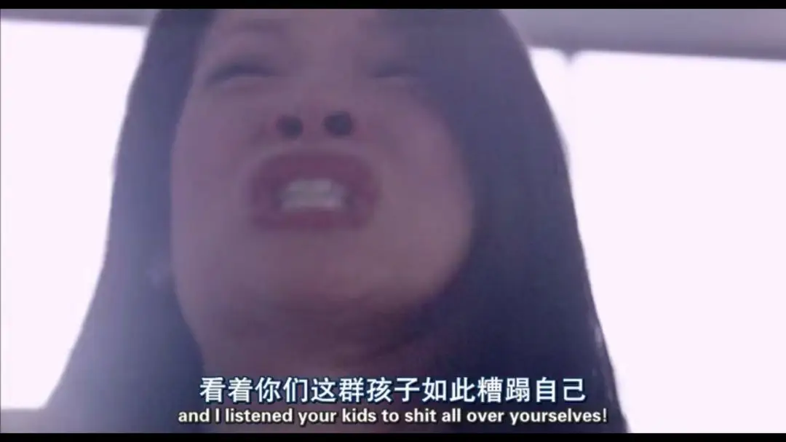
老师的谆谆教导并没有奏效，女孩依旧是“我才不在乎呢”。
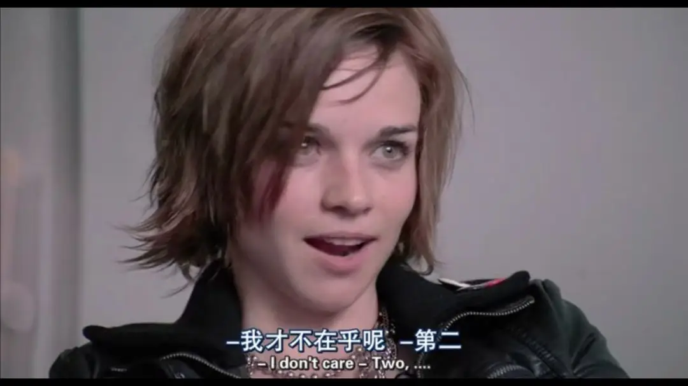
最后，老师歇斯底里地告诉女孩“一个人可以轻易地学会不在乎，但学习在乎却要付出百倍的努力和勇气。”
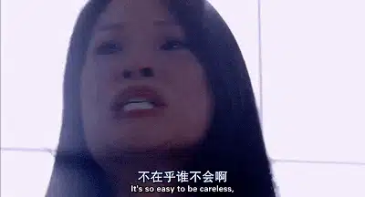
可这份勇气来自哪里。
可能是让我们醍醐灌顶的知识，而更多时候是最基本的求生欲。
可这些都不足以支撑我们在这个罪恶的世界里负重前行，并不能让我们的心灵得到喜乐和释放，将重担看为是至暂至轻的苦楚。
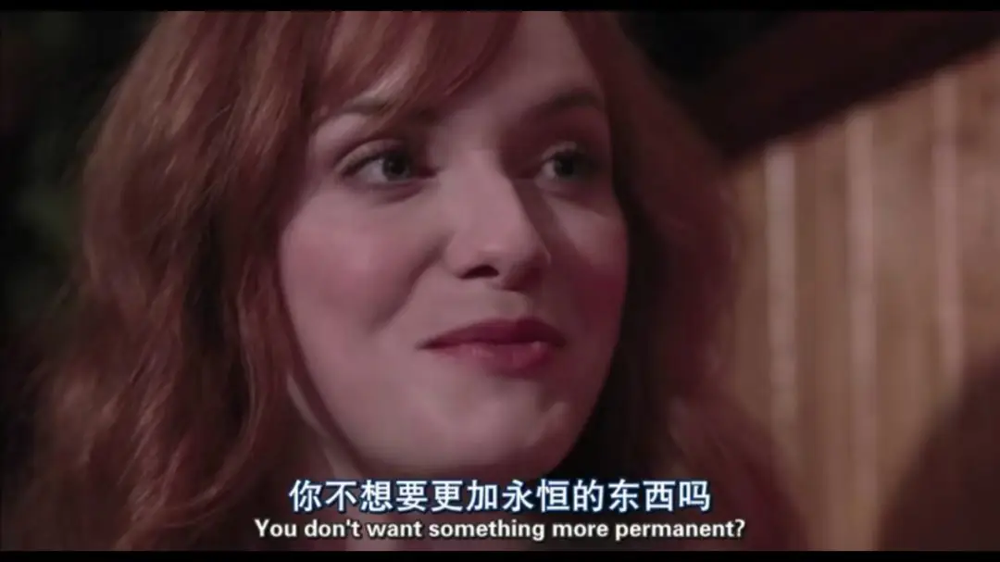
我们太需要一种力量，或者说是一种确据，来让我们以一种超越性的眼光来看这个世界。
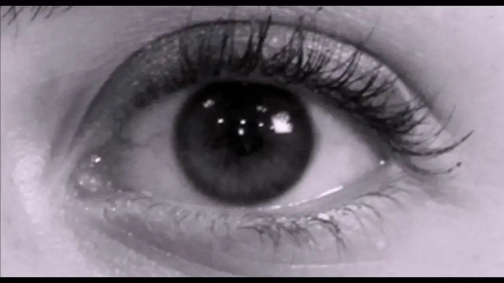
我们需要一种超越现实的安全感让我们重拾在乎的勇气和决心，需要一种永恒的智慧来将我们从现实中抽离出来，从琐碎的生活里发现永恒的盼望。
这样，我们才敢去不怕受伤、不计代价地付出和拥抱骨感的现实！
这里没有挑逗你眼目情欲的小鲜肉
也没有挑动你肉体情欲的段子
更没有膨胀你今生骄傲的鸡血
我们只在乎那些最质朴真诚的作品
在那里我们才能恢复真正的想象力
我们也坚信这才是我们真正需要的

ID:Six_hundred_hits
长按二维码，一键关注
【六百击】
电影评论
尽情分享朋友圈

微信二维码打赏通道
特别提醒：文中图片来自网络，版权归原作者所有，如有侵权请立即与我们联系,我们将及时删除。